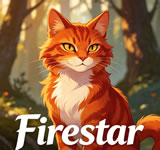
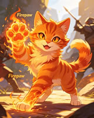
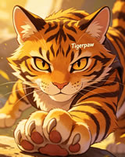
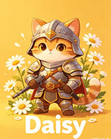
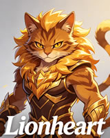
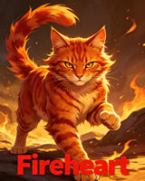
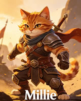

How to Read This Family Tree
Warrior Cats centers on feline relationships as much as territory conflicts. The series weaves together family legacies — kits inheriting traits from both parents, forbidden romances that reshape clan boundaries, and prophecies only understandable through lineage knowledge. This guide presents the five major bloodlines exactly as Erin Hunter wrote them, focusing on canon facts without fan theories or shipping speculation.
Each section organizes by clan, then generation. Mates appear side by side, with kits branching below. Click linked names to view full character profiles. Discover how Firestar and Scourge connect, why Bramblestar carries Tigerstar's legacy, and the origins of the Power of Three.
ThunderClan — The Heart of the Forest
ThunderClan serves as the central clan throughout the series. Most major prophecies originate here, and many legendary leaders were either born in its forest or joined through marriage. Notably, ThunderClan's bloodline traces back not to wild ancestors, but to Jake — a domestic cat from a Twoleg garden.
1. Jake's Line — The Source of Everything
Everything starts with Jake, a friendly ginger-and-white kittypet who never entered the forest. This domestic cat had two mates, siring the two most pivotal toms in the series: Firestar, who saved the clans, and Scourge, the ruthless BloodClan leader who nearly destroyed them. Half-brothers with vastly different fates.


First Litter — Jake & Nutmeg
Second Litter — Jake & Ruby


Scourge and Firestar were half-brothers through Jake, yet never knew their connection. They met only once — during the final battle where Firestar defended the clans and Scourge led BloodClan's attack. Clan conflicts often turn brother against brother.
2. Firestar's Direct Line — ThunderClan's Peak Bloodline
Firestar redefined clan cat expectations. He transitioned from a domestic cat to the leader who united the forest. With Sandstorm, he raised two remarkably different daughters: Leafpool, the quiet medicine cat who defied the warrior code for a WindClan warrior, and Squirrelstar, the bold leader who confronts challenges head-on.
First Generation — Leafpool & Squirrelstar
Branch A — Leafpool's Forbidden Kits (The Power of Three)


Squirrelstar and Bramblestar raised these three kits to hide their true parentage. When the truth emerged, ThunderClan faced internal strife. Jayfeather embraced his role as a sharp-witted medicine cat, Lionblaze grappled with losing his invincibility, and Hollyleaf reacted most dramatically.
Branch B — Squirrelstar's Line (The Current Ruling Bloodline)

Juniperkit and Dandelionkit were stillborn or died shortly after birth. Alderheart and Sparkpelt survived and carry Firestar's legacy as his grandchildren.
3. Graystripe & Millie's Branch — The RiverClan Bridge
Graystripe experienced two significant cross-clan romances. First with Silverstream, the beautiful RiverClan she-cat whose life ended tragically. Later with Millie, a former kittypet who followed him back to the forest. Both unions produced warriors who impacted clan history.

4. Cloudtail's Branch — Princess Enters the Clans
Firestar's sister Princess remained a kittypet near the forest. She gave her firstborn kit to ThunderClan, where he became Cloudtail — headstrong and opinionated, yet fiercely loyal. His lineage includes Dovewing and Ivypool, the sisters central to the Fourth Apprentice prophecy.
The Next Generation — Whitewing's Kits
ShadowClan — The Tiger's Shadow
ShadowClan carries a well-deserved reputation as the clan that produced more antagonists than any other. Understanding the series requires tracing ShadowClan's bloodline, as nearly every major conflict connects back to Tigerstar — one ambitious, power-hungry cat whose legacy persists in both ThunderClan and ShadowClan leadership.
1. Tigerstar's ThunderClan Line — Ambition Redeemed
Tigerstar's first mate was Goldenflower, a loyal ThunderClan queen. She raised Bramblestar and Tawnypelt while Tigerstar pursued his ambitions. Goldenflower provided love and stability; Tigerstar passed down his appearance and legacy of ambition. Both kits grappled with their father's shadow, striving to define their own paths.
Their Kits
2. Tigerstar's RiverClan Line — The Dark Apprentices
After being exiled from ThunderClan, Tigerstar met Sasha, a rogue near the river. Their kits — Hawkfrost, Mothwing, and Tadpole — grew up outside clan life before Tigerstar brought them to RiverClan. Hawkfrost trained in the Dark Forest, while Mothwing became a medicine cat skeptical of StarClan. Both struggled with their absent father's influence.
Tadpole drowned as a kit before reaching the clans. Hawkfrost met his end at Bramblestar's claws — another instance of half-brothers clashing, echoing Firestar's battle with Scourge.
3. Brokenstar's Cursed Line — A Dynasty of Pain
Before Tigerstar, ShadowClan endured Brokenstar's reign. Yellowfang bore him in secret — medicine cats cannot have kits — and he grew into a tyrant. His leadership became so cruel that Yellowfang was forced to end his life. His siblings died in infancy, leaving no surviving bloodline. Their story stands as a warning about the corruption of power.
RiverClan — Where Water Runs Deep
RiverClan cats are skilled swimmers who embrace water while other clans avoid it. Their lineage intertwines prophecy and forbidden love. The story begins with Crookedstar's tragic life, then flows through Oakheart and Bluestar's secret union, which permanently linked RiverClan and ThunderClan.
1. Crookedstar's Line — The Cursed Legacy
Crookedstar stood among RiverClan's greatest leaders, yet his life was marked by tragedy from Mapleshade's curse. He lost his mother, brother, and many loved ones. Silverstream, his only surviving kit with Willowbreeze, grew into a bold she-cat who fell in love with ThunderClan's Graystripe. Their cross-clan romance transformed inter-clan relations.
The Cross-Clan Branch — Silverstream & Graystripe

2. The Oakheart-Bluestar Bridge — Two Clans, One Blood
Long before Firestar's cross-clan romance, Bluestar and Oakheart shared a secret relationship. Their union produced Mistystar, RiverClan's longest-serving leader, and Stonefur, who died defending half-clan kits from Tigerstar. Though their story ended in tragedy, they left behind two of the forest's most respected warriors.
Their Kits
WindClan — Moor Runners & Prophecy Bearers
WindClan cats are swift, proud, and fiercely independent. Life on the open moor forged their resilience — they were driven from their territory yet reclaimed it through sheer determination. Notably, WindClan blood flows through the Power of Three prophecy, originating from Crowfeather's forbidden relationship with Leafpool.
1. Crowfeather's Line — The Father of Prophecy
Crowfeather's personal life was marked by conflict. He loved Leafpool deeply, nearly leaving WindClan for her. When their relationship ended, he took Nightcloud as his mate, partly out of guilt. His choices affected both she-cats profoundly. With Leafpool, he sired the Power of Three. With Nightcloud, he had Breezepelt, who grew bitter toward his half-siblings and joined the Dark Forest.

2. Onestar's Legacy — From Ally to Enemy
Onestar and Firestar were once close friends. After becoming WindClan's leader and receiving his nine lives, Onestar grew wary of Firestar, straining their relationship. His lineage continued through Heathertail, one of WindClan's most skilled hunters. Onestar's story illustrates how power can alter even the strongest friendships.


SkyClan — The Lost and Found
SkyClan was exiled from the forest long before the main story begins. Twolegs destroyed their territory, and the other four clans offered no aid. Their bloodline persisted, however, scattered among rogues, barn cats, and loners. Firestar later discovered them and reestablished the clan. SkyClan's lineage is shorter than other clans, but every member carries the resilience of their exile and return.
1. Leafstar's Rebuilt Line — A New Beginning
Leafstar wasn't born into SkyClan. She was a rogue named Leaf who joined Firestar's effort to rebuild the clan. Her mate Billystorm was a daylight warrior — living with Twolegs at night while serving SkyClan by day. Together they had the first kits of the reestablished clan, proving SkyClan was not just surviving but thriving once more.

Their Kits
2. Cloudstar's Ancient Echo — The Exile That Started It All
Cloudstar led the final generation of the original SkyClan. When Twolegs destroyed their territory, he led his cats into exile and pleaded with the other four clans for refuge. They refused. This rejection led to SkyClan's disappearance for generations. Though Cloudstar has no living descendants in the modern clans, his spirit guides every subsequent SkyClan leader. A legacy endures beyond bloodlines.
The Master Bloodline — Complete Clan Genealogy
This master chart provides a concise overview of clan connections. At a glance, you can trace how all five clans interweave through blood ties, forbidden romances, and enduring lineages. Every major character finds their place within this framework.
Key Bloodline Facts Every Fan Should Know
The Strongest Hybrid Chain — The Power of Three
Jayfeather, Lionblaze, and Hollyleaf embody exceptional lineage. They combine Firestar's ThunderClan passion with Crowfeather's WindClan agility. Jayfeather inherited prophetic abilities and a sharp demeanor. Lionblaze gained unmatched fighting prowess. Hollyleaf possessed unwavering conviction. No other cats in the series carry such potent mixed-clan heritage.
The Most Controversial Bond — Bramblestar's Dual Inheritance
Bramblestar carries one of the forest's most complex legacies. His father was Tigerstar, the ambitious former leader who sought power through violence. His mate is Squirrelstar, Firestar's daughter and ThunderClan royalty. This dual heritage — Tigerstar's strategic mind balanced against Firestar's moral compass — fuels ongoing fan debate about his leadership.
Three Generations of Forbidden Love
Forbidden love isn't merely a subplot — it drives much of the series' narrative. Three generations of cats defied clan boundaries for love:
- Bluestar & Oakheart — Their secret kits were Mistystar and Stonefur, and those two cats connected ThunderClan and RiverClan permanently.
- Graystripe & Silverstream — She died giving birth to his kits, but Stormfur and Feathertail went on to shape the clans in ways nobody expected.
- Leafpool & Crowfeather — They defied the medicine cat code completely. Their forbidden union produced the Power of Three.
Two Dark Sources, One Forest
The clans' two greatest threats originated not from StarClan or external forces, but from fellow cats. Scourge, a small Twolegplace cat with a dog-tooth collar, and Tigerstar, the ambitious ThunderClan warrior who claimed the forest as his own, came from entirely different bloodlines yet shared a fatal flaw: both believed themselves superior to others, and both fell because of it.
Senior Warriors & Clan Pillars — The Backbone of ThunderClan
Not all pivotal cats occupy prominent positions in family trees. Some warriors earn legendary status through consistent dedication. These senior cats raised kits, patrolled borders, and maintained clan operations while leaders and deputies focused on larger challenges. Many served so long that younger generations cannot imagine ThunderClan without them.
- Whitestorm — The white senior warrior and former deputy who served under both Bluestar and Firestar. Lionheart's brother, Frostfur's mate, and the moral compass of an entire generation.
- Frostfur — Whitestorm's long-time mate and a queen who raised some of the clan's most important kits. Mother of Brindleface's line and grandmother of half the senior warriors alive today.
- Dustpelt — A gruff senior warrior who mentored many modern clan members. Bramblestar's brother-in-law and Briarlight's father, he demonstrated that stern demeanor can coexist with courage.
- Runningwind — A loyal Bluestar-era warrior and one of Whitestorm's closest friends. Quiet, dependable, and a reminder that not every legend has to be loud.
- Graypillow — The elder who now spends his days in the elders' den telling the next generation about the battles he fought. Every clan's history lives or dies with cats like him.
- Rosetail — A she-cat warrior who served the clan with quiet strength. The kind of cat every clan needs but never gets a leader ceremony for.
- Clawtalon — An active warrior in the modern era, walking the same patrols the elders used to walk. The future of ThunderClan is built on his shoulders now.
Tragic Hearts — Cats Lost Too Soon
Not every warrior lives to become an elder. Several beloved characters died before reaching that stage, their losses shaping clan dynamics for generations. These cats are remembered as both cautionary tales and symbols of sacrifice, proving even brief lives can leave enduring legacies.
- Honeyfern — A kind-hearted warrior who died from a snake bite on the eve of her mating with Berrynose, deeply affecting him.
- Berrynose — A temperamental warrior fixated on food who lost his mate Honeyfern to a snake. He continues patrolling her favorite territory.
- Thornfrost — A warrior without a major narrative arc who nonetheless earned respect through steady service.
- Beefern — A diligent clan member who maintained nursery supplies and cared for elders without seeking recognition.